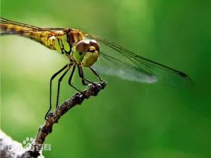
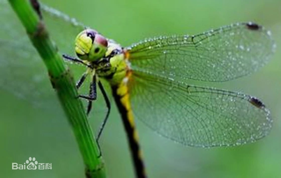
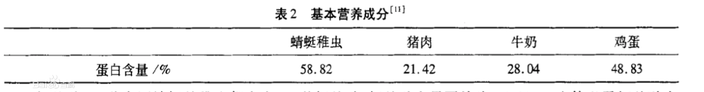
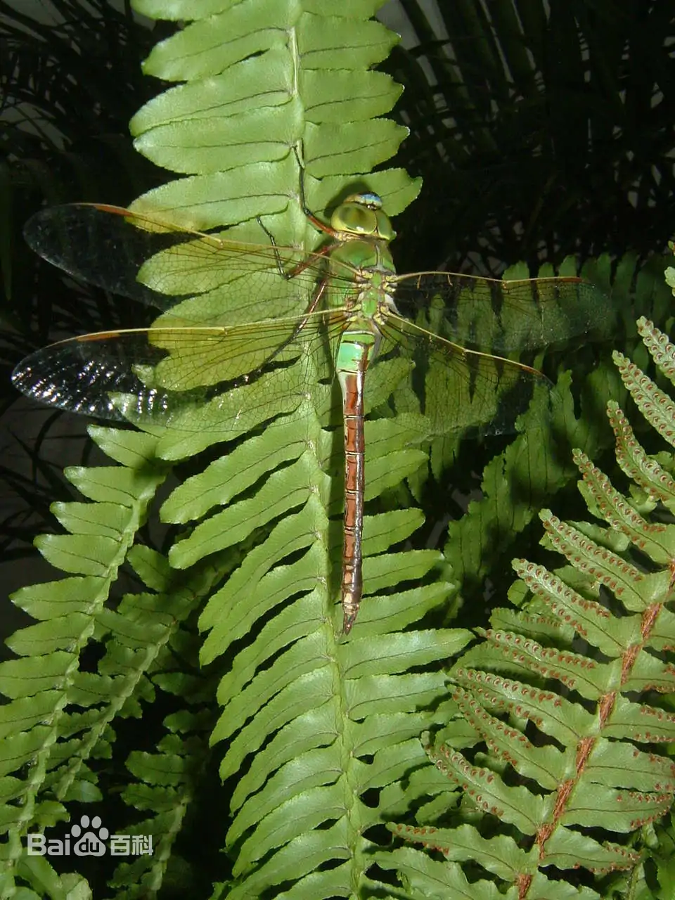
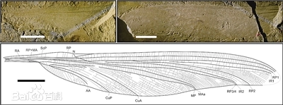
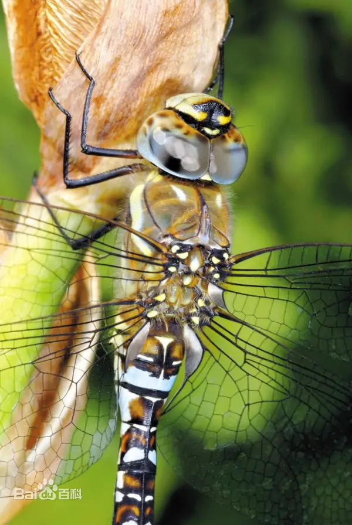

蜻蜓是一个多义词，请在下列义项上选择浏览
蜻蜓（差翅亚目昆虫）
蜻蜓是无脊椎动物，昆虫纲，蜻蜓目，差翅亚目昆虫的通称。 [1] 后翅基部比前翅基部稍大，翅脉也稍有不同。休息时四翅展开，平放于两侧。稚虫短粗，具直肠鳃，无尾鳃。包括蜓总科Aeshnoidea、大蜓总科Cordulegastroidea、蜻总科Libelluloidea等3总科，共11科。蜓科和蜻科最为常见，广布于我国各地。
蜻蜓是食肉性昆虫。它们捕食苍蝇、蚊子、叶蝉、虻蠓类和小型蝶蛾类等多种农林牧业害虫。蜻蜓是有益于人类的一类重要天敌昆虫。“蜻蜓点水”是蜻蜓将卵产在水中的生物学特征。其幼虫（稚虫）生活在水中，生活期因种类而异，蜓类一般为2年，有的长达了3至5年。 [3] 可以用来监测环境污染，有药用、食用、观赏价值。
亚 门 六足亚门
纲 昆虫纲
亚 纲 有翅亚纲
目 蜻蜓目
分布区域 世界性分布
法语名 Libellule
中文名 蜻蜓
外文名 dragonfly
别 名 丁丁、点灯儿、蚂螂、负劳、诸乘、纱羊、山咪、光光听
拉丁学名 Dragonfly
界 动物界
门 节肢动物门
目录
种类特征
蜻蜓是一类比较原始且种类较少的昆虫。全世界约有5000种。 中国蜻蜓的种类：Needham（1930-1932）在《中国蜻蜓手册》及其后增订共记录我国蜻蜓目种类283种。胡经甫（1935）在《中国蜻蜓名录》中，辑录中国蜻蜓目计87属308种。隋敬之、孙洪国（1986）《中国习见蜻蜓》一书，以中国科学院动物研究所当时收藏的中国蜻蜓标本，记述了中国蜻蜓208种。Davies等（1984--1985）的《世界蜻蜓种类名录》被认为是现今有关全世界蜻蜓种类最完备的名录，共收录全世界已知蜻蜓5600余种。其中，中国的己知种类仅有250多种。赵修复（1990）《中国春蜓分类》记述中国春蜓科22属145种。
蜓总科 Aeshnoidea
体大型至甚大型。头部在背观，两眼互相接触呈一条很长直线。下唇端缘纵裂；雌性产卵器粗大。翅的中室有或无横脉；前后翅三角室形状相似，距离弓脉也一样远；在翅痣内端常有1条支持脉，有1条径增脉。体蓝色、绿色或褐色，飞行很快。有的种类单眼很大，多在黄昏飞出，捕吃蚊子；有的种类趋光性颇强。本科在中国有30余种。
体中等大小至大型，体黑色，具黄色花纹；两眼距离甚远，下唇中叶完整，不纵裂；前后翅三角室形状相同，并且距离弓脉一样远；雄性后翅臀角呈一个角度（甚少数圆形）；基中室无横脉；臀圈缺如，甚少具少数翅室。雌性无产卵器。幼虫触角只有4节，第3节最大，第4节细小，前足和中足的跗节只有2节。常见于溪边及池塘边。早春最为常见。一个甚大的科，广布全世界。我国有春蜓亚科Gomphinae、钩尾春蜓亚科Onychogomphinae、林春蜓亚科Lindeniinae等亚科。
蜓总科Cordulegastroidea
体大型至甚大型。头部在背观，两眼互相接触呈一条很长直线。下唇端缘纵裂；雌性产卵器粗大。翅的中室有或无横脉；前后翅三角室形状相似，距离弓脉也一样远；在翅痣内端常有1条支持脉，有1条径增脉。体蓝色、绿色或褐色，飞行很快。有的种类单眼很大，多在黄昏飞出，捕吃蚊子；有的种类趋光性颇强。本科在中国有30余种。
原隶属于大蜓科。我国分布有华裂唇蜓属Sinorogomphus等。
蜻总科 Libelluloidea
身体中等大小至大型，常具金属蓝色或绿色，头部在背面观两眼互相接触一段较长的距离；眼的后缘中央常有一个小型波状突起；臀圈明显，四边形或六边形，或稍为长形；足常较长。我国不及10种。
体大型，褐色，合胸在前翅与后翅之间有一圈黄带。后翅三角室比前翅三角室距弓脉稍为更近；臀圈不呈足状，它的长度差不多比宽度稍长，无中肋。足特别长。我中国有十几种。国外的研究学者将大蜻科Macromiidae的全部种类放至伪蜻科Corduliidae中，并作为蜻科Corduliidae的一亚种。
体型中等大小。侏红小蜻Nannophya pygmea是差翅亚目中身体最小者，后翅长约13-15mm。前缘室与亚缘室的横脉常联成直线；翅痣无支持脉；前后翅三角室所朝方向不同，前翅三角室与翅的长轴垂直，距离弓脉甚远；后翅三角室与翅的长轴同向，通常它的基边与弓脉联成直线。臀圈足形，趾突出，具中肋。 稚虫多在静水下爬行觅食，它具有匙形下唇，其上有侧刚毛和颏刚毛，这是取食的利器。所谓“蜻蜓点水”，在本科甚为常见。本科是一个大科，我国有70余种，不少的种类是人们习见蜻蜓。经常栖息于旷野、池塘、河流等处。
形态结构
前后翅形状及脉序不同；翅基部不成柄状，不显著狭长；中室被斜脉分 为三角室及上三角室，在前后翅又通常呈不同形状；两复眼多接触或以细缝分离；雄1个内肛附器；停息时四 翅向两侧平伸。
翅膀
对于蜻蜓翅膀的研究主要集中于力学原理及仿生学方面。由于蜻蜓翅膀有翅结和翅痣两个特殊结构，使得其成为自然界中优秀的飞行者。力学研究方面发现，蜻蜓在空中的拍翅飞行和转弯飞行时翅膀会受到水平力、垂直力、扭矩、弯曲,作用的影响，发现蜻蜓慢速飞行和飞行器飞行很相似。蜻蜓翅膀飞行力学的研究方法也在不断地改进，从用绳子系到利用高速摄影机拍摄，再到风洞内观测，越来越先进的方法，对于蜻蜓飞行力学研究更加的透彻。
触角感受器
蜻蜓的触角很短，刚毛状，上面分布了许多感受器。感受器的种类主要有锥状感受器、腔锥感受器、板状感受器及坛状感受器。有研究表明不同种蜻蜓所具有的感受器种类不一，数量及分布形式也不同。对于雌雄蜻蜓其感受器也是有差异的，雌性蜻蜓的感受器在同一科、同一属及同种内是稳定的，而在不同科、不同属间就有明显的差别，同一属内不同种间差别虽然微小，但个别种的区别还是是很明显的，因此雌性蜻蜓的感受器在分类中也具有一定意义。
生活习性
蜻类，飞翔力强，捕食功能健全；蜓类，飞行极强，在山间小溪迅速来回飞行捕捉猎物。
蜻蜓喜欢潮湿的环境，所以一般在池塘或河边飞行，其幼虫（稚虫）也需要在水中发育。
蜻蜓目昆虫属半变态发育，一生只有卵、稚虫和成虫3个阶段，成虫常通过蜻蜓点水的方式将卵产入水中，稚虫又称水虿，在水中捕食其它水生生物，待羽化前爬出水面，交配产卵完成生活史。
某些种类的雌蜻蜓会用一种极端的策略逃避不喜欢的求爱者：它们会从天空中掉下来然后假装死亡。
蜻蜓除了捕食其他各种昆虫外，在种与种之间还具有成虫相互残食的习性。捕食的时候它们会猛抓住猎物，其脚上长有的大量粗毛，可以帮助它抓紧猎物，令其无法逃脱。口器也相当发达，可以撕咬猎物，方便进食，并能够在30分钟内吃光与自己体重相等的食物。
分布与生境
分布
主要分布在热带和亚热带地区。
生境
蜻蜓与环境的关系非常密切。
主要包括农田附近的河流、水井等，其特点是水的流速相对平缓，流域面积较大，具有丰富的水生植物及浮游动物，可供蜻蜓的取食的食物也较多，其种类、数量也相对来说比较多。
主要为一些山地溪流，其特点是水流的速度较快，水流量也大，水质好，但水的温度较低，水里的水生植物，比较单一，蜻蜓可取食的食物种类较少，因此在该环境下分布的蜻蜓种类较少。
主要包括水库、湖泊等，水域面积较宽旷，水流平缓，有许多水生植物和浮游生物，有利于蜻蜓的繁殖与生长。
主要价值
蜻蜓目昆虫资源丰富，在很多方面都发挥着重要的作用。首先其幼虫作为具有代表性的一类水生生物，可以对水环境污染进行监测；有些种类体内含有一些活性物质可作为药用材料；又由于其体内含有丰富的蛋白质、氨基酸、矿物质等，因此在食用方面具有很大的开发前景；其外形优美也可作为收藏或者观赏。
仿生学
仿生照相机，就是模仿蜻蜓的复眼独特构造原理制成的复眼照相机，一次可以拍摄出几千张重复的照片飞机，蜻蜓能在很小的推力下翱翔，向前向后及左右两侧飞行，其翅的震动可以产生涡流而抬升躯体，研究蜻蜓的飞行机理对飞机的设计制造具有重要意义。蜻蜓翅的前缘有角质加厚形成的翅痣，在飞行时其能消除翅膀的震颤，飞机设计师在飞机的两翼各加一块平衡重锤，防止飞机由于剧烈震动而发生机翼断裂。
食用价值
蜻蜓中部分种类的稚虫和蛹具有很高的营养价值，是可以供人类食用的，在一些地区的市场和餐厅中常可见到多种食用蜻蜓出售。例如，红蜻蜓稚虫粗蛋白平均含量为58.82%，显著地高于猪肉、牛奶和鸡蛋等食品。蜻蜓稚虫含有丰富的蛋白质，是一种很好的高蛋白食品。
可食用的蜻蜓种类数约占全部食用昆虫总数的3%，约50-60种。我国有关于食用和药用蜻蜓的记录，据胡鹏等考证，我国共有8种食用蜻蜓，分别是：红蜻、舟尾丝螅、角突箭蜓、碧伟蜓、白尾灰蜻、黑异色灰蜻、黄蜻和大黄赤蜻。
其他价值
许多蜻蜓色彩艳丽，是观赏昆虫的一大类；蜻蜓成虫常捕食小型蛾类等农业害虫，蚊子的幼虫也是水生昆虫，蜻蜓在稚虫和成虫时期分别能捕食卫生害虫蚊子的幼虫和成虫，埃及伊蚊Aedes aegypti是传染病登革热的主要虫媒，预防登革热有效的办法就是减少人类周围埃及伊蚊的数量，蜻蜓是埃及伊蚊的天敌，捕食埃及伊蚊的能力较强，通过控制蜻蜓继而控制埃及伊蚊的数量，阻止登革热病毒的传播路径，是一种高效可行的办法。
蜻蜓作为一种常见的昆虫，其稚虫水生，对汞和镉都具有富集性，随着水体重金属含量的增高其体内重金属的含量也随着增高，因此常常被用作水体重金属污染的指示生物。
远古蜻蜓
“碧玉眼睛云母翅，轻于粉蝶瘦于蜂”。人们印象中的蜻蜓，小巧轻盈，或翩翩于花间，或轻略于水面。殊不知，在亿万年前，小巧可爱的蜻蜓也曾是空中“巨无霸”。发现的个头最大的蜻蜓，翅展最大达710毫米，生活在距今2.8亿年前的早二叠世，是世界已知最大的昆虫。
蜻蜓是一种古老的昆虫，最早可追溯到3.2亿年前。
分类学上，蜻蜓总目分为已经灭绝的古蜻蜓目、原蜻蜓目，以及现代的蜻蜓目三类。从时间上看，三者是顺序演化的关系：古蜻蜓目仅生存于晚石炭世早期；原蜻蜓目出现于晚古生代并于三叠纪末灭绝；蜻蜓目出现于二叠纪，侏罗纪发生辐射，后代一直延续到今天。
远古蜻蜓比我们想象中要大得多。其出现于距今3亿年前后，到了中生代时期，蜻蜓们的个头也逐渐变大，成为当时空中的“霸主”。作为一种捕食性的动物，它们最主要的食物是各种昆虫，以及一些小的脊椎动物，比如幼年蜥蜴，是不折不扣的肉食主义者。
我国准噶尔盆地西北边缘发现了一枚距今2亿年的原始蜻蜓化石。这种新发现的原始蜻蜓单翅长101至102毫米，翅展宽度达到210毫米，是我国中生代已知的第二大蜻蜓类化石。
在内蒙古宁城侏罗纪道虎沟化石层，还发现了1件保存近完整的蜻蜓前翅化石，单翅长107.6毫米，宽14.3毫米，据此推断该蜻蜓翅展达225毫米，是我国已知蜻蜓目最大的种类，也是世界第四大的蜻蜓。
更有甚者，在美国发现的早二叠世的二叠拟巨脉蜓的翅展竟然可达710毫米
参考资料